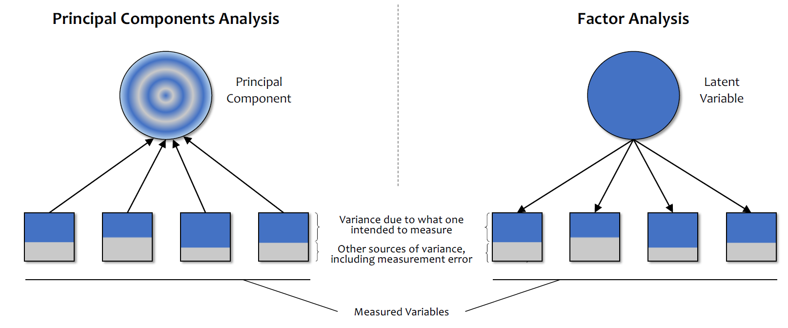
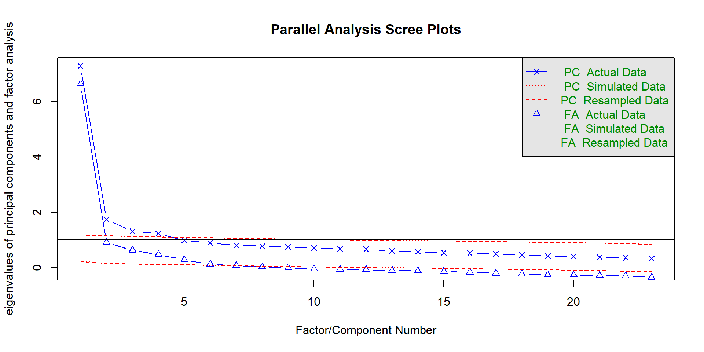

Factor Analysis
DClin Research Methods 1
Dr Christopher Wilson
Teesside University
Overview
What is factor analysis?
Which research questions can factor analysis answer?
What are the assumptions of factor analysis?
How do we conduct factor analysis?
How do we interpret factor analysis?
How do we report factor analysis?
What is factor analysis?
Factor analysis is a statistical technique that is used to reduce a large number of variables to a smaller number of factors.
It can be used in an exploratory or confirmatory manner.
Factor analysis is also used as part of structural equation modelling (not covered here).
Which research questions can factor analysis answer?
Factor analysis is primarily used to identify latent variables (factors) that explain the relationships between observed variables.
This approach can be applied to:
- Scale development in psychology (dimension reduction or data summarisation).
- Research questions involving latent variables.
Scenario 1: Scale development
A researcher is interested in developing a scale to measure “psychological wellbeing”.
They believe that psychological wellbeing is a latent variable which is indicated by a number of observed behaviours.
They develop a questionnaire that initially measures 100 different behaviours.
They then use factor analysis to identify the latent variables (i.e. dimensions of wellbeing) that explain the relationships between the observed behaviours.
Scenario 2: Research questions involving latent variables
A researcher wants to understand the factors that motivate people to seek help for mental health problems.
Through researching the literature, they identify a number of observed variables that are associated with help-seeking behaviour.
They develop a set of questions to capture these variables, such as:
- “I would feel ashamed if I had a mental health problem.”
- “I would feel comfortable talking to my friends about my mental health problems.”
- “I would feel comfortable talking to my family about my mental health problems.”
- “I would feel comfortable talking to a mental health professional about my mental health problems.”
- “I have the skills to manage my mental health problems.”
- “My symptoms are severe.”
Example 2: Research questions involving latent variables
The researcher then uses factor analysis to identify the latent variables that explain the relationships between the observed variables.
The analysis indicates two groups of questions that are highly correlated. The researcher labels these groups as “stigma” and “self-efficacy”, based on which observed variables that are included in each group.
Exploratory factor analysis
Exploratory Factor analysis
- Identify the relational structure between a set of variables in order to reduce them to a smaller set of factors
- The process of dimension reduction (identify new variables) or data summarisation (summarise what is already there)
- The researcher does not have a pre-specified model
Dimension reduction (factor analysis)
- Latent Variables: Not directly observable. Rather they are inferred from other responses
- Many psychological constructs (e.g. anxiety) are latent variables that we cannot directly measure.
- Rather, we can measure behaviours, cognitions and other variables that are related to the construct.
We might concptualise this as: “Responses to the questions are indicative of levels of underlying anxiety”
Data summarisation (principal component analysis)
Index Variables or Components: A weighted summary of measured variables that contribute to the component variable
“Principal components are variables of maximal variance constructed from linear combinations of the input features”
We might conceptualise this as: “We can reduce these measures/questions to a smaller set of higher order, independent, composite variables”
Latent versus index variables
Latent Variables are causes of their indicators: changes in Anxiety (indicator) leads to increased frequency of negative cognitions (measure).
Index Variables are effects of their indicators: change in cholesterol level (indicator) will change QRISK score (index measure).
Altering the indicators of an index changes the definition of the variable being indexed (because the index is a calculation of the indicators). This is not the case with a latent variable.
Types of exploratory factor analysis
There are two common methods of exploratory factor analysis: Common Factor analysis and Principal Component Analysis
CFA looks for latent variables that explain the correlations between observed variables
PCA looks for index variables that explain the correlations between observed variables
Variance in exploratory factor analysis
- CFA assumes that there are two types of variance: common and unique
Variance in exploratory factor analysis
- PCA only assumes common variance

Variance in exploratory factor analysis

Which type of exploratory factor analysis?
Due to these different approaches, PCA is considered to be reflective of the current sample but not generalisable to the wider population
Whereas, CFA is considered appropriate for hypothesis testing and making inferences to the population
What is factor analysis?
What is factor analysis?
- If we measure several variables (or questions), we can examine the correlation between sets of these variables
- Such a correlation matrix is known as an R Matrix (r because correlation)
- If there are clusters of correlations between a number of the variables (or questions), this indicates that they might be linked to the same underlying dimension (or latent variable)
- The researcher should use informed judgement when assessing the appropriateness of variables for inclusion

An r matrix example
Considerations with factor analysis
- Sample size:
- Must be more data points than variables being measured
- A common rule of thumb is at least 10 per variable
- There are tests to assess sample size adequacy (e.g. Kaiser-Meyer test should be greater than 0.5)
- Inter-correlation:
- There must be sufficient correlation between the variables being measured
- A high number of correlations over 0.3
- Can be tested using Bartlett test of sphericity (sig. result means factor analysis can be used)
Other things to check (see Field, 2018)
- The quality of analysis depends upon the quality of the data (GI=GO).
- Avoid multicollinearity:
- several variables highly correlated, r > .80.
- Determinent: should be greater than 0.00001
- Avoid singularity:
- some variables perfectly correlated, r = 1.
- Screen the correlation matrix, eliminate any variables that obviously cause concern.
Representing factor analysis
We can represent factors visually based on the strength of their inter-correlations - Here, the axis of the graph represents a factor or latent variable

Representing factor analysis
We can also represent factor analysis using a regression equation - Here the beta values represent the extent to which the variable “loads onto” a particular factor


Factor Analysis Example: Statistics anxiety
Many people get anxious about statistics
We can ask them about their experience in a number of ways (e.g. questions compiled by students in a stats class)
Their responses might indicate that stats anxiety has a number of dimensions
- i.e. it is a multi-dimensional construct, as opposed to a unitary construct
Factor Analysis Example: Statistics anxiety

Step 1: Create a correlation matrix
Q01 Q02 Q03 Q04 Q05 Q06
Q01 1.000000000 -0.09872403 -0.3366489 0.43586018 0.40243992 0.21673399
Q02 -0.098724032 1.00000000 0.3183902 -0.11185965 -0.11934658 -0.07420968
Q03 -0.336648879 0.31839020 1.0000000 -0.38046016 -0.31030879 -0.22674048
Q04 0.435860179 -0.11185965 -0.3804602 1.00000000 0.40067225 0.27820154
Q05 0.402439917 -0.11934658 -0.3103088 0.40067225 1.00000000 0.25746014
Q06 0.216733985 -0.07420968 -0.2267405 0.27820154 0.25746014 1.00000000
Q07 0.305365139 -0.15917448 -0.3819533 0.40861502 0.33939179 0.51358048
Q08 0.330737608 -0.04962257 -0.2586342 0.34942939 0.26862697 0.22283175
Q09 -0.092339458 0.31464054 0.2998036 -0.12454637 -0.09570151 -0.11264384
Q10 0.213681706 -0.08400316 -0.1933887 0.21581010 0.25820925 0.32223023
Q11 0.356786290 -0.14382984 -0.3506397 0.36865655 0.29782882 0.32807072
Q12 0.345381133 -0.19486946 -0.4099513 0.44164706 0.34674325 0.31250937
Q13 0.354646283 -0.14274026 -0.3179193 0.34429168 0.30182159 0.46640487
Q14 0.337879655 -0.16469991 -0.3707551 0.35080964 0.31533810 0.40224407
Q15 0.245752635 -0.16499581 -0.3123968 0.33423089 0.26137190 0.35989309
Q16 0.498618057 -0.16755228 -0.4186478 0.41586725 0.39491795 0.24433888
Q17 0.370550512 -0.08699527 -0.3273715 0.38273945 0.31041722 0.28226121
Q18 0.347118037 -0.16389415 -0.3752329 0.38200149 0.32209148 0.51332164
Q19 -0.189011027 0.20329748 0.3415737 -0.18597751 -0.16532210 -0.16675017
Q20 0.213897945 -0.20159437 -0.3248338 0.24291796 0.19966945 0.10092489
Q21 0.329153138 -0.20461730 -0.4171878 0.41029317 0.33461494 0.27233273
Q22 -0.104408664 0.23087487 0.2036569 -0.09838349 -0.13253593 -0.16513541
Q23 -0.004480593 0.09967828 0.1502065 -0.03381815 -0.04165684 -0.06868743
Q07 Q08 Q09 Q10 Q11 Q12
Q01 0.30536514 0.33073761 -0.09233946 0.21368171 0.35678629 0.34538113
Q02 -0.15917448 -0.04962257 0.31464054 -0.08400316 -0.14382984 -0.19486946
Q03 -0.38195325 -0.25863421 0.29980362 -0.19338871 -0.35063969 -0.40995127
Q04 0.40861502 0.34942939 -0.12454637 0.21581010 0.36865655 0.44164706
Q05 0.33939179 0.26862697 -0.09570151 0.25820925 0.29782882 0.34674325
Q06 0.51358048 0.22283175 -0.11264384 0.32223023 0.32807072 0.31250937
Q07 1.00000000 0.29749696 -0.12829828 0.28372299 0.34474770 0.42298591
Q08 0.29749696 1.00000000 0.01573316 0.15860850 0.62929768 0.25198582
Q09 -0.12829828 0.01573316 1.00000000 -0.13418658 -0.11552479 -0.16739436
Q10 0.28372299 0.15860850 -0.13418658 1.00000000 0.27143657 0.24582591
Q11 0.34474770 0.62929768 -0.11552479 0.27143657 1.00000000 0.33529466
Q12 0.42298591 0.25198582 -0.16739436 0.24582591 0.33529466 1.00000000
Q13 0.44211926 0.31424716 -0.16743882 0.30196707 0.42316548 0.48871303
Q14 0.44070276 0.28058958 -0.12150197 0.25468730 0.32532025 0.43270398
Q15 0.39136675 0.29968600 -0.18657099 0.29523438 0.36482687 0.33179910
Q16 0.38854534 0.32149420 -0.18886556 0.29058576 0.36907763 0.40805908
Q17 0.39074283 0.59014022 -0.03681556 0.21832214 0.58683495 0.33269383
Q18 0.50086685 0.27974433 -0.14957782 0.29250304 0.37341373 0.49296482
Q19 -0.26912031 -0.15947671 0.24931170 -0.12723487 -0.19965203 -0.26665953
Q20 0.22095420 0.17515089 -0.15864747 0.08406520 0.25533736 0.29802585
Q21 0.48300388 0.29571756 -0.13594310 0.19313633 0.34643407 0.44063832
Q22 -0.16820488 -0.07917265 0.25684622 -0.13090831 -0.16198921 -0.16728557
Q23 -0.07029016 -0.05023839 0.17077441 -0.06191796 -0.08637256 -0.04642506
Q13 Q14 Q15 Q16 Q17 Q18
Q01 0.35464628 0.33787966 0.24575263 0.49861806 0.37055051 0.34711804
Q02 -0.14274026 -0.16469991 -0.16499581 -0.16755228 -0.08699527 -0.16389415
Q03 -0.31791928 -0.37075510 -0.31239678 -0.41864780 -0.32737145 -0.37523290
Q04 0.34429168 0.35080964 0.33423089 0.41586725 0.38273945 0.38200149
Q05 0.30182159 0.31533810 0.26137190 0.39491795 0.31041722 0.32209148
Q06 0.46640487 0.40224407 0.35989309 0.24433888 0.28226121 0.51332164
Q07 0.44211926 0.44070276 0.39136675 0.38854534 0.39074283 0.50086685
Q08 0.31424716 0.28058958 0.29968600 0.32149420 0.59014022 0.27974433
Q09 -0.16743882 -0.12150197 -0.18657099 -0.18886556 -0.03681556 -0.14957782
Q10 0.30196707 0.25468730 0.29523438 0.29058576 0.21832214 0.29250304
Q11 0.42316548 0.32532025 0.36482687 0.36907763 0.58683495 0.37341373
Q12 0.48871303 0.43270398 0.33179910 0.40805908 0.33269383 0.49296482
Q13 1.00000000 0.44978632 0.34219704 0.35837775 0.40837657 0.53293713
Q14 0.44978632 1.00000000 0.38011484 0.41841820 0.35374183 0.49830615
Q15 0.34219704 0.38011484 1.00000000 0.45427861 0.37310235 0.34287045
Q16 0.35837775 0.41841820 0.45427861 1.00000000 0.40976309 0.42197911
Q17 0.40837657 0.35374183 0.37310235 0.40976309 1.00000000 0.37560681
Q18 0.53293713 0.49830615 0.34287045 0.42197911 0.37560681 1.00000000
Q19 -0.22697105 -0.25405813 -0.20980230 -0.26704702 -0.16288096 -0.25663183
Q20 0.20396327 0.22592173 0.20625622 0.26514025 0.20523013 0.23518040
Q21 0.37443078 0.39938896 0.29971557 0.42054273 0.36349147 0.43010427
Q22 -0.19535632 -0.16983754 -0.16790617 -0.15579385 -0.12629066 -0.15982631
Q23 -0.05298304 -0.04847418 -0.06200665 -0.08152195 -0.09167243 -0.08041698
Q19 Q20 Q21 Q22 Q23
Q01 -0.1890110 0.21389794 0.32915314 -0.10440866 -0.004480593
Q02 0.2032975 -0.20159437 -0.20461730 0.23087487 0.099678285
Q03 0.3415737 -0.32483385 -0.41718781 0.20365686 0.150206522
Q04 -0.1859775 0.24291796 0.41029317 -0.09838349 -0.033818152
Q05 -0.1653221 0.19966945 0.33461494 -0.13253593 -0.041656841
Q06 -0.1667502 0.10092489 0.27233273 -0.16513541 -0.068687430
Q07 -0.2691203 0.22095420 0.48300388 -0.16820488 -0.070290157
Q08 -0.1594767 0.17515089 0.29571756 -0.07917265 -0.050238392
Q09 0.2493117 -0.15864747 -0.13594310 0.25684622 0.170774410
Q10 -0.1272349 0.08406520 0.19313633 -0.13090831 -0.061917956
Q11 -0.1996520 0.25533736 0.34643407 -0.16198921 -0.086372565
Q12 -0.2666595 0.29802585 0.44063832 -0.16728557 -0.046425059
Q13 -0.2269710 0.20396327 0.37443078 -0.19535632 -0.052983042
Q14 -0.2540581 0.22592173 0.39938896 -0.16983754 -0.048474181
Q15 -0.2098023 0.20625622 0.29971557 -0.16790617 -0.062006650
Q16 -0.2670470 0.26514025 0.42054273 -0.15579385 -0.081521950
Q17 -0.1628810 0.20523013 0.36349147 -0.12629066 -0.091672426
Q18 -0.2566318 0.23518040 0.43010427 -0.15982631 -0.080416984
Q19 1.0000000 -0.24859386 -0.27489793 0.23392259 0.122434401
Q20 -0.2485939 1.00000000 0.46770448 -0.09970186 -0.034665293
Q21 -0.2748979 0.46770448 1.00000000 -0.12902148 -0.067664367
Q22 0.2339226 -0.09970186 -0.12902148 1.00000000 0.230369402
Q23 0.1224344 -0.03466529 -0.06766437 0.23036940 1.000000000Step 2: Let’s check for Inter-correlation
Step 2: Let’s check for Inter-correlation
- We can use bartlett’s test from the psych package
Step 3: Check sampling adequacy
- Overall should be > 0.5
Kaiser-Meyer-Olkin factor adequacy
Call: KMO(r = raq)
Overall MSA = 0.93
MSA for each item =
Q01 Q02 Q03 Q04 Q05 Q06 Q07 Q08 Q09 Q10 Q11 Q12 Q13 Q14 Q15 Q16
0.93 0.87 0.95 0.96 0.96 0.89 0.94 0.87 0.83 0.95 0.91 0.95 0.95 0.97 0.94 0.93
Q17 Q18 Q19 Q20 Q21 Q22 Q23
0.93 0.95 0.94 0.89 0.93 0.88 0.77 Step 4: Identify number of factors
- Based on Eigenvalues:
- Kaiser (1960) – retain factors with eigen values > 1.
- Joliffe (1972) – retain factors with eigen values > .70.
- Use a scree plot: Cattell (1966): use ‘point of inflexion’.
Which rule?
- Use Kaiser’s extraction when
- Less than 30 variables, communalities after extraction > 0.7
- Sample size > 250 and mean communality ≥ 0.6
- Scree plot is good if sample size is > 200
Scree plot
- We are looking for the point of inflection
- Where there is a drop-off
One approach: See how many factors we can draw a line through
Step 4: Identify number of factors
How many dimensions of stats anxiety are captured in the questionnaire?
- We can run a parallel analysis to get an indication of the number of factors contained within the data
- Parallel Analysis:
- Simulates data within the same range of values as our data set
- Suggests that we retain, at maximum, the factors with eigenvalues larger than those extracted from simulated data.
Step 4: Identify number of factors

Parallel analysis suggests that the number of factors = 6 and the number of components = 4 Call: fa.parallel(x = raq)
Parallel analysis suggests that the number of factors = 6 and the number of components = 4
Eigen Values of
Original factors Resampled data Simulated data Original components
1 6.64 0.25 0.24 7.29
2 0.91 0.15 0.15 1.74
3 0.63 0.13 0.13 1.32
4 0.48 0.11 0.11 1.23
5 0.29 0.10 0.10 0.99
6 0.13 0.08 0.08 0.90
Resampled components Simulated components
1 1.17 1.16
2 1.15 1.14
3 1.13 1.12
4 1.11 1.10
5 1.09 1.09
6 1.08 1.08Step 5: Perform factor analysis (with initial recommended # factors)
Factor Analysis using method = pa
Call: fa(r = raq, nfactors = 6, rotate = "none", max.iter = 100, fm = "pa")
Standardized loadings (pattern matrix) based upon correlation matrix
PA1 PA2 PA3 PA4 PA5 PA6 h2 u2 com
Q01 0.57 0.13 -0.12 0.23 -0.28 -0.19 0.52 0.48 2.3
Q02 -0.28 0.37 0.17 0.12 -0.03 0.01 0.26 0.74 2.6
Q03 -0.60 0.25 0.20 -0.02 -0.01 0.03 0.46 0.54 1.6
Q04 0.61 0.08 -0.06 0.18 -0.09 -0.03 0.42 0.58 1.3
Q05 0.52 0.04 -0.02 0.15 -0.17 -0.08 0.33 0.67 1.5
Q06 0.55 0.02 0.49 -0.17 0.07 -0.01 0.57 0.43 2.2
Q07 0.66 -0.03 0.22 0.03 0.11 0.06 0.50 0.50 1.3
Q08 0.55 0.49 -0.27 -0.21 0.10 -0.02 0.66 0.34 2.9
Q09 -0.27 0.46 0.12 0.21 0.10 0.03 0.35 0.65 2.4
Q10 0.40 -0.01 0.17 -0.09 -0.15 0.02 0.22 0.78 1.8
Q11 0.64 0.31 -0.20 -0.27 0.08 -0.04 0.63 0.37 2.1
Q12 0.64 -0.10 0.06 0.15 0.05 -0.07 0.45 0.55 1.2
Q13 0.65 0.02 0.22 -0.06 0.06 -0.13 0.50 0.50 1.4
Q14 0.63 -0.04 0.16 0.06 0.01 0.01 0.42 0.58 1.2
Q15 0.58 -0.01 0.07 -0.15 -0.19 0.44 0.59 0.41 2.3
Q16 0.66 -0.02 -0.11 0.14 -0.28 0.09 0.56 0.44 1.6
Q17 0.63 0.36 -0.15 -0.15 0.04 0.01 0.57 0.43 1.9
Q18 0.68 -0.04 0.28 0.04 0.09 -0.10 0.57 0.43 1.4
Q19 -0.40 0.27 0.11 0.06 -0.05 0.02 0.25 0.75 2.0
Q20 0.41 -0.17 -0.25 0.19 0.24 0.11 0.37 0.63 3.5
Q21 0.64 -0.10 -0.11 0.27 0.28 0.10 0.60 0.40 2.0
Q22 -0.28 0.29 0.05 0.28 0.05 0.11 0.26 0.74 3.4
Q23 -0.13 0.18 0.08 0.23 0.01 0.08 0.12 0.88 3.1
PA1 PA2 PA3 PA4 PA5 PA6
SS loadings 6.79 1.14 0.83 0.67 0.45 0.32
Proportion Var 0.30 0.05 0.04 0.03 0.02 0.01
Cumulative Var 0.30 0.34 0.38 0.41 0.43 0.44
Proportion Explained 0.67 0.11 0.08 0.07 0.04 0.03
Cumulative Proportion 0.67 0.78 0.86 0.92 0.97 1.00
Mean item complexity = 2
Test of the hypothesis that 6 factors are sufficient.
df null model = 253 with the objective function = 7.55 with Chi Square = 19334.49
df of the model are 130 and the objective function was 0.23
The root mean square of the residuals (RMSR) is 0.02
The df corrected root mean square of the residuals is 0.02
The harmonic n.obs is 2571 with the empirical chi square 364.66 with prob < 3.9e-24
The total n.obs was 2571 with Likelihood Chi Square = 578.65 with prob < 7.6e-58
Tucker Lewis Index of factoring reliability = 0.954
RMSEA index = 0.037 and the 90 % confidence intervals are 0.034 0.04
BIC = -442.12
Fit based upon off diagonal values = 1
Measures of factor score adequacy
PA1 PA2 PA3 PA4 PA5
Correlation of (regression) scores with factors 0.97 0.83 0.80 0.75 0.70
Multiple R square of scores with factors 0.93 0.68 0.64 0.56 0.48
Minimum correlation of possible factor scores 0.87 0.37 0.27 0.12 -0.03
PA6
Correlation of (regression) scores with factors 0.65
Multiple R square of scores with factors 0.42
Minimum correlation of possible factor scores -0.17What does the output tell us?: Loadings
MR, ML and PC are different methods of fitting factor analysis
h2 is the communality of each variable (i.e. the proportion of variance in each variable that is explained by the factors)
u2 is the uniqueness of each variable (i.e. the proportion of variance in each variable that is not explained by the factors)
The higher the h2, the better the variable is represented by the factors
com is the item complexity (i.e. the number of factors that each variable loads onto)
Factor Analysis using method = pa
Call: fa(r = raq, nfactors = 6, rotate = "none", max.iter = 100, fm = "pa")
Standardized loadings (pattern matrix) based upon correlation matrix
PA1 PA2 PA3 PA4 PA5 PA6 h2 u2 com
Q01 0.57 0.13 -0.12 0.23 -0.28 -0.19 0.52 0.48 2.3
Q02 -0.28 0.37 0.17 0.12 -0.03 0.01 0.26 0.74 2.6
Q03 -0.60 0.25 0.20 -0.02 -0.01 0.03 0.46 0.54 1.6
Q04 0.61 0.08 -0.06 0.18 -0.09 -0.03 0.42 0.58 1.3
Q05 0.52 0.04 -0.02 0.15 -0.17 -0.08 0.33 0.67 1.5
Q06 0.55 0.02 0.49 -0.17 0.07 -0.01 0.57 0.43 2.2
Q07 0.66 -0.03 0.22 0.03 0.11 0.06 0.50 0.50 1.3
Q08 0.55 0.49 -0.27 -0.21 0.10 -0.02 0.66 0.34 2.9
Q09 -0.27 0.46 0.12 0.21 0.10 0.03 0.35 0.65 2.4
Q10 0.40 -0.01 0.17 -0.09 -0.15 0.02 0.22 0.78 1.8
Q11 0.64 0.31 -0.20 -0.27 0.08 -0.04 0.63 0.37 2.1
Q12 0.64 -0.10 0.06 0.15 0.05 -0.07 0.45 0.55 1.2
Q13 0.65 0.02 0.22 -0.06 0.06 -0.13 0.50 0.50 1.4
Q14 0.63 -0.04 0.16 0.06 0.01 0.01 0.42 0.58 1.2
Q15 0.58 -0.01 0.07 -0.15 -0.19 0.44 0.59 0.41 2.3
Q16 0.66 -0.02 -0.11 0.14 -0.28 0.09 0.56 0.44 1.6
Q17 0.63 0.36 -0.15 -0.15 0.04 0.01 0.57 0.43 1.9
Q18 0.68 -0.04 0.28 0.04 0.09 -0.10 0.57 0.43 1.4
Q19 -0.40 0.27 0.11 0.06 -0.05 0.02 0.25 0.75 2.0
Q20 0.41 -0.17 -0.25 0.19 0.24 0.11 0.37 0.63 3.5
Q21 0.64 -0.10 -0.11 0.27 0.28 0.10 0.60 0.40 2.0
Q22 -0.28 0.29 0.05 0.28 0.05 0.11 0.26 0.74 3.4
Q23 -0.13 0.18 0.08 0.23 0.01 0.08 0.12 0.88 3.1
PA1 PA2 PA3 PA4 PA5 PA6
SS loadings 6.79 1.14 0.83 0.67 0.45 0.32
Proportion Var 0.30 0.05 0.04 0.03 0.02 0.01
Cumulative Var 0.30 0.34 0.38 0.41 0.43 0.44
Proportion Explained 0.67 0.11 0.08 0.07 0.04 0.03
Cumulative Proportion 0.67 0.78 0.86 0.92 0.97 1.00
Mean item complexity = 2
Test of the hypothesis that 6 factors are sufficient.
df null model = 253 with the objective function = 7.55 with Chi Square = 19334.49
df of the model are 130 and the objective function was 0.23
The root mean square of the residuals (RMSR) is 0.02
The df corrected root mean square of the residuals is 0.02
The harmonic n.obs is 2571 with the empirical chi square 364.66 with prob < 3.9e-24
The total n.obs was 2571 with Likelihood Chi Square = 578.65 with prob < 7.6e-58
Tucker Lewis Index of factoring reliability = 0.954
RMSEA index = 0.037 and the 90 % confidence intervals are 0.034 0.04
BIC = -442.12
Fit based upon off diagonal values = 1
Measures of factor score adequacy
PA1 PA2 PA3 PA4 PA5
Correlation of (regression) scores with factors 0.97 0.83 0.80 0.75 0.70
Multiple R square of scores with factors 0.93 0.68 0.64 0.56 0.48
Minimum correlation of possible factor scores 0.87 0.37 0.27 0.12 -0.03
PA6
Correlation of (regression) scores with factors 0.65
Multiple R square of scores with factors 0.42
Minimum correlation of possible factor scores -0.17What does the output tell us?: variance explained
SS loadings is the Eigenvalue (i.e. the proportion of variance in each variable that is explained by the factors)
Proportion Var is the proportion of variance the factor explains
Cumulative Var is the cumulative proportion of variance explained by the factor
Proportion Explained is the relative proportion of variance explained by the factor (of the total variance explained by all factors)
Cumulative Proportion is the cumulative proportion of variance explained by the factor (of the total variance explained by all factors)
Factor Analysis using method = pa
Call: fa(r = raq, nfactors = 6, rotate = "none", max.iter = 100, fm = "pa")
Standardized loadings (pattern matrix) based upon correlation matrix
PA1 PA2 PA3 PA4 PA5 PA6 h2 u2 com
Q01 0.57 0.13 -0.12 0.23 -0.28 -0.19 0.52 0.48 2.3
Q02 -0.28 0.37 0.17 0.12 -0.03 0.01 0.26 0.74 2.6
Q03 -0.60 0.25 0.20 -0.02 -0.01 0.03 0.46 0.54 1.6
Q04 0.61 0.08 -0.06 0.18 -0.09 -0.03 0.42 0.58 1.3
Q05 0.52 0.04 -0.02 0.15 -0.17 -0.08 0.33 0.67 1.5
Q06 0.55 0.02 0.49 -0.17 0.07 -0.01 0.57 0.43 2.2
Q07 0.66 -0.03 0.22 0.03 0.11 0.06 0.50 0.50 1.3
Q08 0.55 0.49 -0.27 -0.21 0.10 -0.02 0.66 0.34 2.9
Q09 -0.27 0.46 0.12 0.21 0.10 0.03 0.35 0.65 2.4
Q10 0.40 -0.01 0.17 -0.09 -0.15 0.02 0.22 0.78 1.8
Q11 0.64 0.31 -0.20 -0.27 0.08 -0.04 0.63 0.37 2.1
Q12 0.64 -0.10 0.06 0.15 0.05 -0.07 0.45 0.55 1.2
Q13 0.65 0.02 0.22 -0.06 0.06 -0.13 0.50 0.50 1.4
Q14 0.63 -0.04 0.16 0.06 0.01 0.01 0.42 0.58 1.2
Q15 0.58 -0.01 0.07 -0.15 -0.19 0.44 0.59 0.41 2.3
Q16 0.66 -0.02 -0.11 0.14 -0.28 0.09 0.56 0.44 1.6
Q17 0.63 0.36 -0.15 -0.15 0.04 0.01 0.57 0.43 1.9
Q18 0.68 -0.04 0.28 0.04 0.09 -0.10 0.57 0.43 1.4
Q19 -0.40 0.27 0.11 0.06 -0.05 0.02 0.25 0.75 2.0
Q20 0.41 -0.17 -0.25 0.19 0.24 0.11 0.37 0.63 3.5
Q21 0.64 -0.10 -0.11 0.27 0.28 0.10 0.60 0.40 2.0
Q22 -0.28 0.29 0.05 0.28 0.05 0.11 0.26 0.74 3.4
Q23 -0.13 0.18 0.08 0.23 0.01 0.08 0.12 0.88 3.1
PA1 PA2 PA3 PA4 PA5 PA6
SS loadings 6.79 1.14 0.83 0.67 0.45 0.32
Proportion Var 0.30 0.05 0.04 0.03 0.02 0.01
Cumulative Var 0.30 0.34 0.38 0.41 0.43 0.44
Proportion Explained 0.67 0.11 0.08 0.07 0.04 0.03
Cumulative Proportion 0.67 0.78 0.86 0.92 0.97 1.00
Mean item complexity = 2
Test of the hypothesis that 6 factors are sufficient.
df null model = 253 with the objective function = 7.55 with Chi Square = 19334.49
df of the model are 130 and the objective function was 0.23
The root mean square of the residuals (RMSR) is 0.02
The df corrected root mean square of the residuals is 0.02
The harmonic n.obs is 2571 with the empirical chi square 364.66 with prob < 3.9e-24
The total n.obs was 2571 with Likelihood Chi Square = 578.65 with prob < 7.6e-58
Tucker Lewis Index of factoring reliability = 0.954
RMSEA index = 0.037 and the 90 % confidence intervals are 0.034 0.04
BIC = -442.12
Fit based upon off diagonal values = 1
Measures of factor score adequacy
PA1 PA2 PA3 PA4 PA5
Correlation of (regression) scores with factors 0.97 0.83 0.80 0.75 0.70
Multiple R square of scores with factors 0.93 0.68 0.64 0.56 0.48
Minimum correlation of possible factor scores 0.87 0.37 0.27 0.12 -0.03
PA6
Correlation of (regression) scores with factors 0.65
Multiple R square of scores with factors 0.42
Minimum correlation of possible factor scores -0.17What does the output tell us?: Model Significance
Chi.sq is the chi-square statistic for the model
It is displayed in the line: The total n.obs was 2571 with Likelihood Chi Square = 578.65 with prob < 7.6e-58
Evaluating a model
The overall model significance is assessed using the chi-square statistic
The eigenvalues indicate the amount of variance explained by each factor
The AIC and BIC are used to compare different models (lower values are better)
The RMSEA is a measure of model fit (lower values are better)
Schmitt et al. (2018) outline their approach to evaluating factor analysis models
Testing a model model with reduced number of factors
Factor Analysis using method = pa
Call: fa(r = raq, nfactors = 2, rotate = "none", max.iter = 100, fm = "pa")
Standardized loadings (pattern matrix) based upon correlation matrix
PA1 PA2 h2 u2 com
Q01 0.56 0.12 0.324 0.68 1.1
Q02 -0.28 0.39 0.228 0.77 1.8
Q03 -0.61 0.25 0.430 0.57 1.3
Q04 0.61 0.09 0.377 0.62 1.0
Q05 0.52 0.05 0.276 0.72 1.0
Q06 0.53 0.04 0.282 0.72 1.0
Q07 0.66 -0.01 0.437 0.56 1.0
Q08 0.53 0.40 0.445 0.56 1.9
Q09 -0.27 0.46 0.287 0.71 1.6
Q10 0.40 0.00 0.163 0.84 1.0
Q11 0.63 0.27 0.472 0.53 1.3
Q12 0.64 -0.08 0.421 0.58 1.0
Q13 0.65 0.04 0.421 0.58 1.0
Q14 0.63 -0.02 0.396 0.60 1.0
Q15 0.56 0.00 0.315 0.68 1.0
Q16 0.65 -0.01 0.428 0.57 1.0
Q17 0.63 0.34 0.511 0.49 1.5
Q18 0.68 -0.02 0.461 0.54 1.0
Q19 -0.40 0.28 0.238 0.76 1.8
Q20 0.40 -0.15 0.187 0.81 1.3
Q21 0.63 -0.07 0.403 0.60 1.0
Q22 -0.28 0.29 0.161 0.84 2.0
Q23 -0.13 0.19 0.053 0.95 1.8
PA1 PA2
SS loadings 6.67 1.04
Proportion Var 0.29 0.05
Cumulative Var 0.29 0.34
Proportion Explained 0.86 0.14
Cumulative Proportion 0.86 1.00
Mean item complexity = 1.3
Test of the hypothesis that 2 factors are sufficient.
df null model = 253 with the objective function = 7.55 with Chi Square = 19334.49
df of the model are 208 and the objective function was 1.23
The root mean square of the residuals (RMSR) is 0.05
The df corrected root mean square of the residuals is 0.05
The harmonic n.obs is 2571 with the empirical chi square 3114.53 with prob < 0
The total n.obs was 2571 with Likelihood Chi Square = 3155.34 with prob < 0
Tucker Lewis Index of factoring reliability = 0.812
RMSEA index = 0.074 and the 90 % confidence intervals are 0.072 0.077
BIC = 1522.12
Fit based upon off diagonal values = 0.97
Measures of factor score adequacy
PA1 PA2
Correlation of (regression) scores with factors 0.96 0.78
Multiple R square of scores with factors 0.92 0.61
Minimum correlation of possible factor scores 0.83 0.23
Factor analysis rotation
What is rotation?
- It is possible that variables load “highly” onto one factor and “medium” onto another
- By rotating the factor axes, the variables are aligned with the factors that they load onto most
- This helps us discriminate between factors
There are different methods of rotation
- Orthogonal rotation: Assumes that factors are unrelated and keeps them that way
- Oblique rotation: Assumes that factors might be related and allows them to be correlated after rotation
Are factors related?
-Theoretical: Do we have logical reason for thinking they could be connected?
-Based on data: Does the factor plot suggest independence or relatedness?
Step 7: Rotation
- Perform factor analysis (with rotation)
Code
Factor Analysis using method = pa
Call: fa(r = raq, nfactors = 2, rotate = "oblimin", max.iter = 100,
fm = "pa")
Standardized loadings (pattern matrix) based upon correlation matrix
PA1 PA2 h2 u2 com
Q01 0.57 0.03 0.324 0.68 1.0
Q02 -0.12 0.44 0.228 0.77 1.2
Q03 -0.48 0.36 0.430 0.57 1.8
Q04 0.61 -0.01 0.377 0.62 1.0
Q05 0.52 -0.03 0.276 0.72 1.0
Q06 0.52 -0.05 0.282 0.72 1.0
Q07 0.63 -0.11 0.437 0.56 1.1
Q08 0.66 0.32 0.445 0.56 1.4
Q09 -0.08 0.51 0.287 0.71 1.0
Q10 0.39 -0.06 0.163 0.84 1.1
Q11 0.70 0.16 0.472 0.53 1.1
Q12 0.58 -0.19 0.421 0.58 1.2
Q13 0.63 -0.07 0.421 0.58 1.0
Q14 0.59 -0.12 0.396 0.60 1.1
Q15 0.53 -0.09 0.315 0.68 1.1
Q16 0.62 -0.12 0.428 0.57 1.1
Q17 0.73 0.24 0.511 0.49 1.2
Q18 0.64 -0.13 0.461 0.54 1.1
Q19 -0.27 0.35 0.238 0.76 1.9
Q20 0.33 -0.22 0.187 0.81 1.8
Q21 0.57 -0.18 0.403 0.60 1.2
Q22 -0.15 0.34 0.161 0.84 1.4
Q23 -0.05 0.21 0.053 0.95 1.1
PA1 PA2
SS loadings 6.33 1.39
Proportion Var 0.28 0.06
Cumulative Var 0.28 0.34
Proportion Explained 0.82 0.18
Cumulative Proportion 0.82 1.00
With factor correlations of
PA1 PA2
PA1 1.00 -0.22
PA2 -0.22 1.00
Mean item complexity = 1.2
Test of the hypothesis that 2 factors are sufficient.
df null model = 253 with the objective function = 7.55 with Chi Square = 19334.49
df of the model are 208 and the objective function was 1.23
The root mean square of the residuals (RMSR) is 0.05
The df corrected root mean square of the residuals is 0.05
The harmonic n.obs is 2571 with the empirical chi square 3114.53 with prob < 0
The total n.obs was 2571 with Likelihood Chi Square = 3155.34 with prob < 0
Tucker Lewis Index of factoring reliability = 0.812
RMSEA index = 0.074 and the 90 % confidence intervals are 0.072 0.077
BIC = 1522.12
Fit based upon off diagonal values = 0.97
Measures of factor score adequacy
PA1 PA2
Correlation of (regression) scores with factors 0.96 0.81
Multiple R square of scores with factors 0.91 0.65
Minimum correlation of possible factor scores 0.82 0.30Step 7: Rotation
Step 7: Rotation

Reporting factor analysis
Reporting factor analysis
The researcher should report:
the number of factors that were extracted
the method of extraction and rotation
A table of factor loadings
Summary
What is factor analysis?
Which research questions can factor analysis answer?
What are the assumptions of factor analysis?
How do we conduct factor analysis?
How do we interpret factor analysis?
How do we report factor analysis?